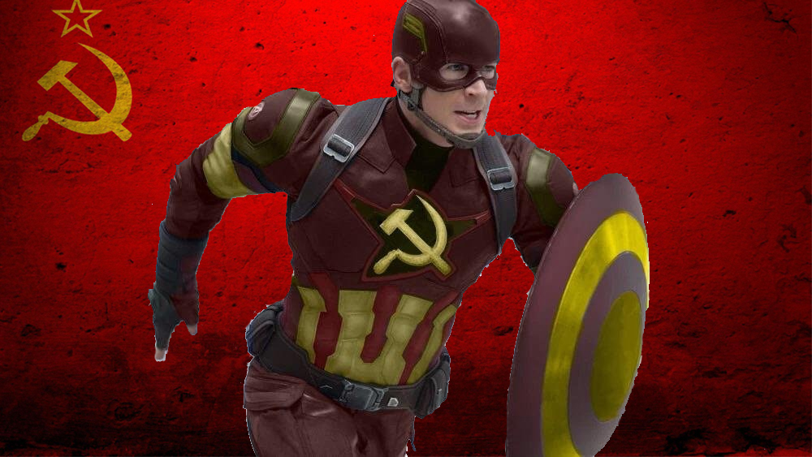

Un-American Captian America

Steve Rogers, famously known as Captain America, does not uphold the firm beliefs and ideals of the United States.The first is that America is a country that rejects the belief of placing unlimited faith in extraordinary individuals. We broke away from a monarchy, and we revere George Washington for stepping back from the presidency. We've created a bogged down political system with layers and layers of checks and balances and veto points that even our most powerful, brillant, skilled, leaders of this free country can only expect to accomplish a fraction of their agenda while they serve the people. According to the world, we built an unusually weak presidency and then we further amended the Constitution to limit presidents to two terms which is two four year terms. The second is that Steve is friends with Bucky Barnes growing up. Bucky, more commonly known as Winter Soldier was a brainwashed Soviet soldier. The majority of Captain America’s life was spent before the end of World War II, but that's not how America has seen its role in the world for a long, long time. Steve Rogers is Unamerican Captain America.